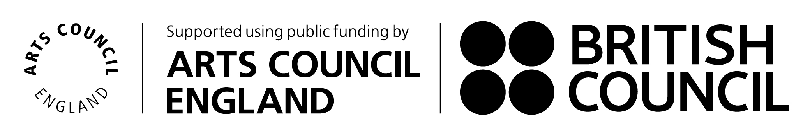
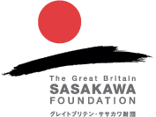

13 April 2017 Jazz Spot Candy Chiba, JP
14 April 2017 Velvet Sun Tokyo, JP with Satoko Fujii
15 April 2017 Manda-La 2 Tokyo, Japan
16 April 2017 Nanya Nagoya, JP with Ryoko Ono
17 April 2017 Big Apple Kobe, JP with Satoko Fujii
18 April 2017 Pepperland Okayama, JP
19 April 2017 Jazz Riverside Fukuoka, JP
3 May 2017 Vortex Jazz Club, London UK
4 May 2017 Vortex Jazz Club, London, UK
5 May 2017 Blue Orange Theatre, Birmingham, UK
6 May 2017 Fuse Art Space, Bradford, UK
7 May 2017 The Bridge Hotel, Newcastle, UK
8 May 2017 Bramley's Bar, Canterbury, UK
12 May 2017 Jazztage Goerlitz, Goerlitz, DE
Many thanks to Arts Council England for supporting our 2017 UK Touring!

Many thanks to Arts Council England, the British Council and the Great Britain Sasakawa Foundation for supporting our 2017 Japanese tour and collaborations!

